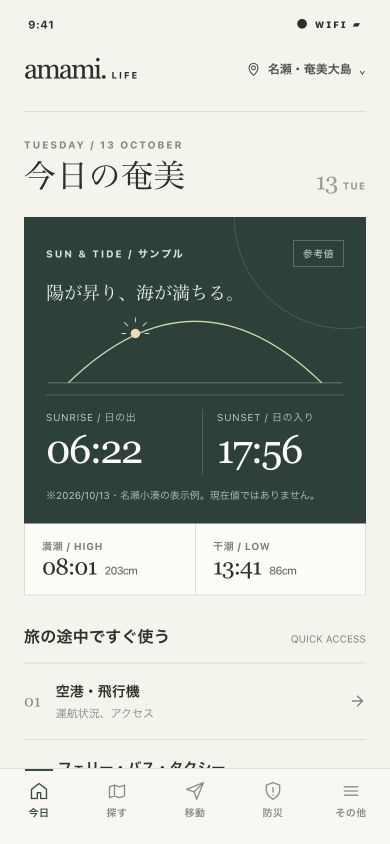
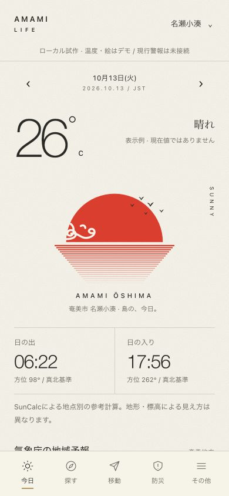
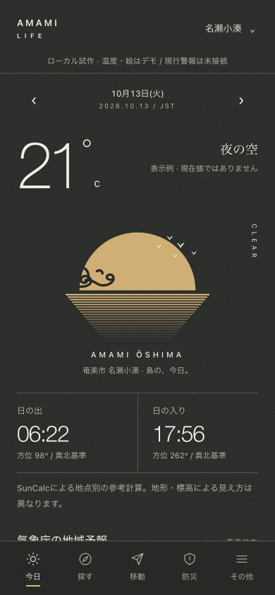
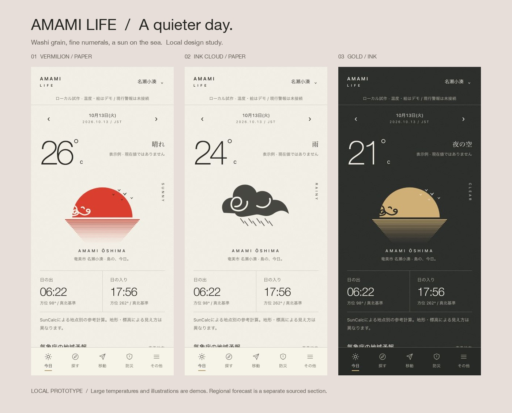

A — Editorial / original

既存の比較基準。紙と深緑。
添付の和紙、細い数字、朱の日輪、墨の雨雲、金の夜を軸にしたデザイン比較です。独立した方向性はA/Bの2系統。CはBの夜版です。ユーザーの継続指定により、B昼＋C夜を共通デザインとして採用しています。

既存の比較基準。紙と深緑。

添付の雰囲気をもとにした操作可能な新UI。

Bと同じ構図・部品を使う夜版。

撮影はブラウザでの実表示です。iOS/Androidのバンドル生成は成功していますが、実機起動・字体・VoiceOver/TalkBackの確認は未実施です。Aは元の比較用デザインを保持しています。詳しい実装・出典・監査・テスト結果は同梱のREADMEと開発レポートを参照してください。